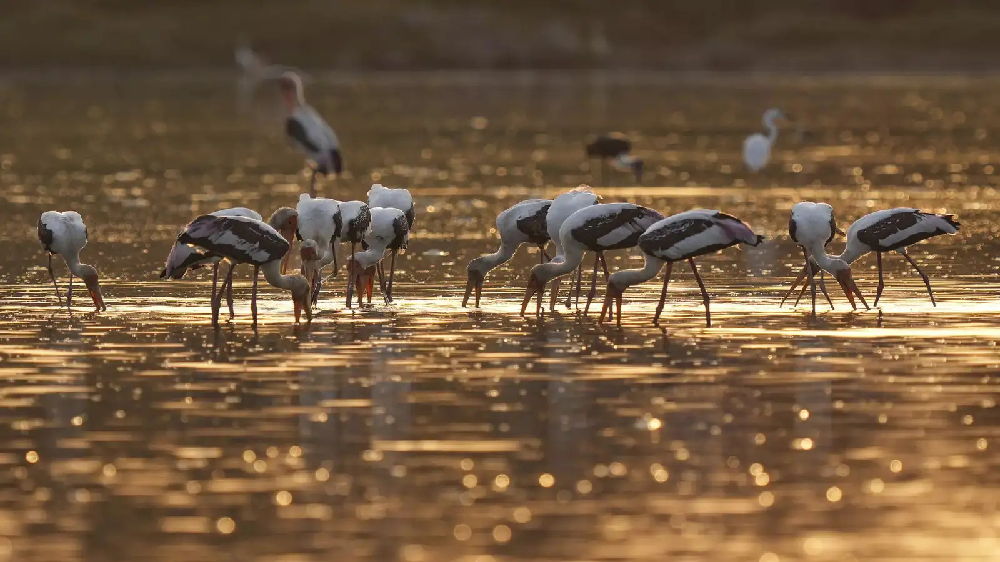
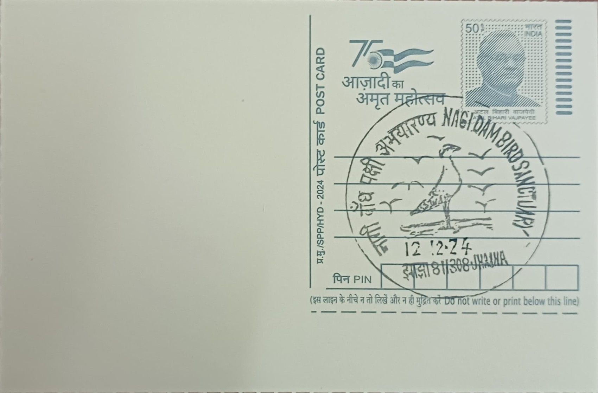

Nagi Dam takes its name from the Nagi river, a tributary stream in the hilly, forested terrain of southern Bihar's Jamui district, which was impounded to create the reservoir now known as Nagi Dam Bird Sanctuary. The dam itself was built by the state irrigation department primarily to supply water to roughly 9,850 acres of surrounding farmland in the Jhajha forest range, a purpose it continues to serve alongside its present-day ecological role. Over time, as silt and aquatic vegetation accumulated along the reservoir's shallow margins, the site evolved unplanned into a rich wetland habitat, drawing waterfowl in numbers that eventually outgrew its original irrigation-only identity and prompted its formal recognition as a protected area.
The reservoir was declared a bird sanctuary on 25 February 1984 under Section 18 of the Wildlife (Protection) Act, 1972, with a final notification following under Section 26A on 4 September 2009, placing it among Bihar's earliest designated bird sanctuaries. In 2004, BirdLife International recognised it, together with the nearby Nakti Dam Bird Sanctuary in the same forest division, as part of the Nagi Dam and Nakti Dam Important Bird Area, citing its significance for globally threatened and congregatory waterbird species. The two sites were further elevated in status on 5 June 2024, World Environment Day, when both were designated Ramsar Wetlands of International Importance, giving this stretch of Jamui district a conservation profile unusual for a region otherwise given over almost entirely to agriculture.
Spanning approximately 7.91 square kilometres, Nagi is counted among the smallest of Bihar's bird sanctuaries, its shallow open water and marshy fringes sitting within the Jhajha forest range of the Jamui Forest Division under the state forest department's management. Surveys have recorded upward of 130 bird species using the wetland across the year, a mix of resident waders and waterfowl supplemented heavily each winter, from roughly November through February, by migratory arrivals following flyways from Central Asia and beyond. The sanctuary's vegetation of submerged and emergent aquatic plants, built up gradually since the dam's construction, provides both feeding grounds and roosting cover, sustaining a density of birdlife disproportionate to its modest size.
Among the sanctuary's most notable visitors is the bar-headed goose, one of the highest-flying migratory birds in the world, with an estimated three percent of the species' global population recorded using the Nagi wetland during peak winter months. This concentration of a single flagship species, alongside assorted ducks, egrets, storks, and other waders, has been central to the site's recognition under both the Important Bird Area framework and its subsequent Ramsar listing, since it meets internationally accepted thresholds for supporting a significant share of a species' population at a single wetland. The seasonal spectacle of these congregations has also made the otherwise little-known reservoir a point of reference for ornithologists studying flyway patterns across the Indo-Gangetic plain.
Management of the sanctuary today falls jointly to Bihar's forest and irrigation departments, the former overseeing habitat protection and monitoring under the state's wildlife wing and the latter maintaining the dam structure that sustains the water body feeding both farms and birdlife. Documentation submitted for the 2024 Ramsar designation included updated species counts and hydrological data that are now used as a baseline for ongoing monitoring of water levels and habitat condition at the site. Functioning simultaneously as an irrigation asset for local cultivators and an internationally recognised wetland for migratory birds, Nagi Dam Bird Sanctuary remains one of the few places in this part of Bihar where agricultural infrastructure and conservation priorities are managed side by side under a single, continuously maintained reservoir system.
| Date of Introduction | October 8, 2024 |
|---|---|
| Address | Sub Postmaster, |
| Jhajha SO, | |
| Jamui (dt.), Bihar - 811308. |